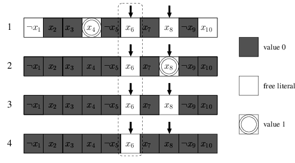

Advanced: Two Watched Literals
In my experience, implementing the original CDCL algorithm is not the hard part. Most of the complexity and debug time lies on the lazy data structures - two watched literals.
You must read the two-watched literals section in the slide From DPLL to CDCL SAT solvers to understand the steps of two watched literals.
The main idea of two watched literals is: A clause with 2 non-false literals cannot be unit or conflicting.
In the following sections, we will modify our code to incorporate the two watched literals data structure in our CDCL solver.
Implementation
First, we initialize the core data structure lit2clauses and clause2lits, where
lit2clauses[lit]are the clauses that are watching literallitnow.clause2lits[c]are the literals that clausecare watching now. Ifcis unit clause,len(clause2lits[c]) == 1or elselen(clause2lits[c]) == 2.
from collections import defaultdict
def init_watches(formula: Formula):
"""
Return lit2clauses and clause2lits
"""
lit2clauses = defaultdict(list)
clause2lits = defaultdict(list)
for clause in formula:
if len(clause) == 1:
# For unit clause, we watch the only literal
lit2clauses[clause.literals[0]].append(clause)
clause2lits[clause].append(clause.literals[0])
else:
# For other clause, we choose any 2 literals to watch
lit2clauses[clause.literals[0]].append(clause)
lit2clauses[clause.literals[1]].append(clause)
clause2lits[clause].append(clause.literals[0])
clause2lits[clause].append(clause.literals[1])
return lit2clauses, clause2lits
We also add __hash__ function to the Clause class for it to be hashable. It is safe because literals shall not change after the formation of the clause.
@dataclass
class Clause:
literals: List[Literal]
def __repr__(self):
return '∨'.join(map(str, self.literals))
def __iter__(self) -> Iterator[Literal]:
return iter(self.literals)
def __len__(self):
return len(self.literals)
def __hash__(self):
x = 0
for lit in self.literals:
x ^= hash(lit)
return x
In the original CDCL algorithm, unit_propagation took most of the time, so the works of two watched literals lie most in unit_propagation.
You can run python -m cProfile -s time cdcl.py cnf_file to verify:
7405674 function calls (7404843 primitive calls) in 2.189 seconds
Ordered by: internal time
ncalls tottime percall cumtime percall filename:lineno(function)
832445 1.217 0.000 1.903 0.000 full-cdcl.py:182(clause_status)
1631505 0.262 0.000 0.262 0.000 full-cdcl.py:90(value)
270 0.191 0.001 2.100 0.008 full-cdcl.py:209(unit_propagation)
2417388 0.158 0.000 0.158 0.000 {method 'append' of 'list' objects}
841475 0.150 0.000 0.212 0.000 full-cdcl.py:34(__iter__)
842221 0.062 0.000 0.062 0.000 {built-in method builtins.iter}
301638 0.036 0.000 0.036 0.000 {method 'count' of 'list' objects}
306672/306669 0.022 0.000 0.022 0.000 {built-in method builtins.len}
...
For each clause, we will try to watch two non-false literals. With the exception of unit clause, we watch the only non-false literals.
If a literal becomes False, we visit the clause that contains it. Note that if a literal becomes True, then its negation becomes False.
-
First, we initialize the watches
clause2litsandlit2clausesfrom the formula. -
For each assignment, we put the assigned literal into a stack pending to propagate.
-
In
unit_propagate, we pop off the literalwatching_litto propagate, try to rewatchclause2lits[watching_lit], until conflict or the stack becomes empty.In the figure below, if \(x_6\) is to be assign
False, only 4 possible cases might arise.
- If we can find another non-false literal to rewatch, then rewatch it and all is fine. (case 1)
- If we cannot find another non-false literal to watch, and another watching literal is assigned
True, then do nothing. (case 2) - If we cannot find another non-false literal to watch, and another watching literal is unassigned, then the clause is unit, we assign it by unit rule and push it to the stack. (case 3)
- If we cannot find another non-false literal to watch, and another watching literal is assigned
False, then a conflict occurs, do the backtrack. (case 4)
def unit_propagation(assignments, lit2clauses, clause2lits, to_propagate: List[Literal]) -> Tuple[str, Optional[Clause]]:
while len(to_propagate) > 0:
watching_lit = to_propagate.pop().neg()
# use list(.) to copy it because size of
# lit2clauses[watching_lit]might change during for-loop
watching_clauses = list(lit2clauses[watching_lit])
for watching_clause in watching_clauses:
for lit in watching_clause:
if lit in clause2lits[watching_clause]:
# lit is another watching literal of watching_clause
continue
elif lit.variable in assignments and assignments.value(lit) == False:
# lit is a assigned False
continue
else:
# lit is not another watching literal of watching_clause
# and is non-False literal, so we rewatch it. (case 1)
clause2lits[watching_clause].remove(watching_lit)
clause2lits[watching_clause].append(lit)
lit2clauses[watching_lit].remove(watching_clause)
lit2clauses[lit].append(watching_clause)
break
else:
# we cannot find another literal to rewatch (case 2,3,4)
watching_lits = clause2lits[watching_clause]
if len(watching_lits) == 1:
# watching_clause is unit clause, and the only literal
# is assigned False, thus indicates a conflict
return ('conflict', watching_clause)
# the other watching literal
other = watching_lits[0] if watching_lits[1] == watching_lit else watching_lits[1]
if other.variable not in assignments:
# the other watching literal is unassigned. (case 3)
assignments.assign(other.variable, not other.negation, watching_clause)
to_propagate.insert(0, other)
elif assignments.value(other) == True:
# the other watching literal is assigned True. (case 2)
continue
else:
# the other watching literal is assigned False. (case 4)
return ('conflict', watching_clause)
return ('unresolved', None)
In the add_learnt_clause, we need to add the watches of the newly learnt clause, the literals to watch must be the most recent assigned literals (with largest decision level).
def add_learnt_clause(formula, clause, assignments, lit2clauses, clause2lits):
formula.clauses.append(clause)
for lit in sorted(clause, key=lambda lit: -assignments[lit.variable].dl):
if len(clause2lits[clause]) < 2:
clause2lits[clause].append(lit)
lit2clauses[lit].append(clause)
else:
break
Finally, the cdcl_solve function. We first initialize the watches and prepare the stack of literals to be propagated.
def cdcl_solve(formula: Formula) -> Optional[Assignments]:
"""
Solve the CNF formula.
If SAT, return the assignments.
If UNSAT, return None.
"""
assignments = Assignments()
lit2clauses, clause2lits = init_watches(formula)
# First, do unit propagation to assign the initial unit clauses
unit_clauses = [clause for clause in formula if len(clause) == 1]
to_propagate = []
for clause in unit_clauses:
lit = clause.literals[0]
var = lit.variable
val = not lit.negation
if var not in assignments:
assignments.assign(var, val, clause)
to_propagate.append(lit)
reason, clause = unit_propagation(assignments, lit2clauses, clause2lits, to_propagate)
if reason == 'conflict':
return None
while not all_variables_assigned(formula, assignments):
var, val = pick_branching_variable(formula, assignments)
assignments.dl += 1
assignments.assign(var, val, antecedent=None)
to_propagate = [Literal(var, not val)]
while True:
reason, clause = unit_propagation(assignments, lit2clauses, clause2lits, to_propagate)
if reason != 'conflict':
# no conflict after unit propagation, we back
# to the decision (guessing) step
break
b, learnt_clause = conflict_analysis(clause, assignments)
if b < 0:
return None
add_learnt_clause(formula, learnt_clause, assignments, lit2clauses, clause2lits)
backtrack(assignments, b)
assignments.dl = b
# The learnt clause must be a unit clause, so the
# next step must again be unit progagation
literal = next(literal for literal in learnt_clause if literal.variable not in assignments)
var = literal.variable
val = not literal.negation
assignments.assign(var, val, antecedent=learnt_clause)
to_propagate = [Literal(var, not val)]
return assignments
All is done!